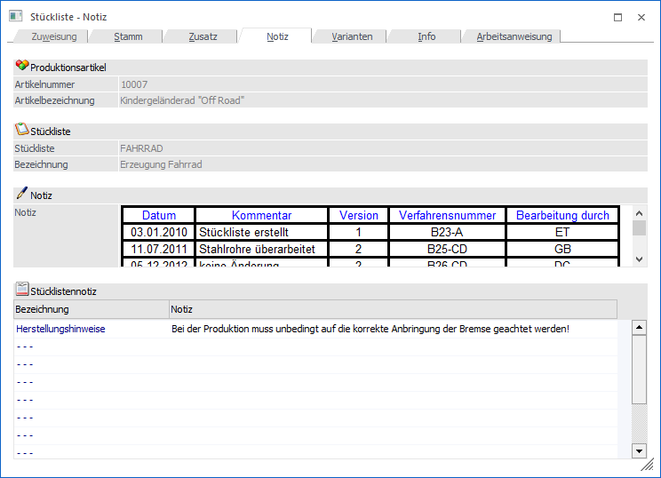
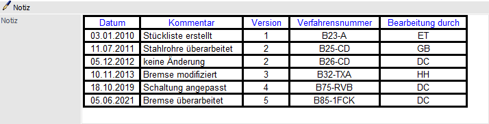
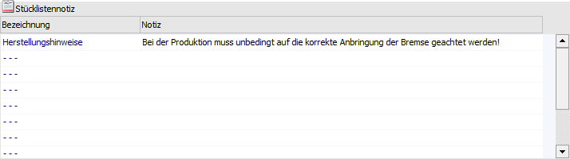

In dem Register "Notiz" können zusätzliche Texte zu der Stückliste erfasst werden.

Folgende Eingabefelder, Einstellungen und Information stehen zur Verfügung:
Produktionsartikel

Ø Artikelnummer
An dieser Stelle wird die Artikelnummer des ausgewählten Produktionsartikels angezeigt.
Ø Bezeichnung
Hier wird die Bezeichnung des aktuell gewählten Produktionsartikels dargestellt.
Stückliste

Ø Stückliste
An dieser Stelle wird die Nummer der ausgewählten Stückliste angezeigt.
Ø Bezeichnung
Hier wird die Bezeichnung der aktuell gewählten Stückliste dargestellt.
Notiz

Ø Notiz
An dieser Stelle kann ein beliebig langer Text zu der Stückliste erfasst werden. Dieser Text kann mit Formatierungen versehen werden.
Stücklistennotiz

Ø Stücklistennotiz 1 bis 10
Pro Stückliste können zusätzlich 10 Stücklistennotizen à 100 Zeichen hinterlegt werden.
Hinweis
Die Beschriftung dieser 10 Stücklistennotizen (Feld "Bezeichnung") kann in den PPS-Parameter (Bereich "Notiz - Stückliste") individuell vergeben werden.